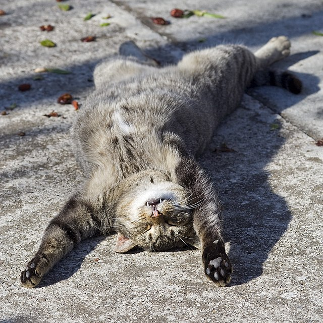
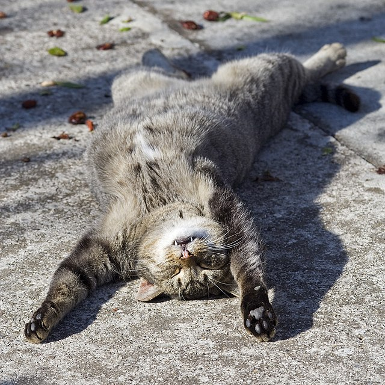

Les amoureux des chats connaissent les races de chats et ont leurs préférences. Cependant, la
grandemajorité des chatsdomestiques qui sont dans les foyers français ne disposent pas tous d'un
pedigree, ce qui constituel'élémentindispensable permettant qu'un chat soit reconnu comme chat de
race. Certains aimeront le Chartreux ou le Maine Coon, le Persan ou bien encore le Sacré de
Birmanie,tandis qued'autres nerêveront que d'un chat sans poils comme le Sphynx. Les goûts et les
couleurs ne se discutent pas,comme ondit,cependant vous pourrez découvrir les nombreuses races de
chats reconnues, via ce lien : Le Monde.
 
